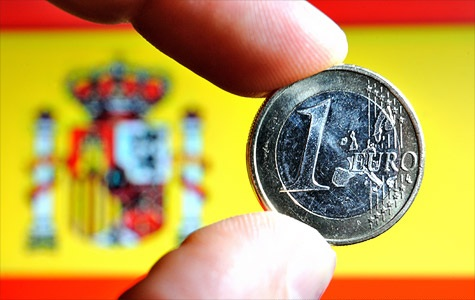

|
Istorie Politică Comunități autonome Mediul înconjurător Economie Demografie Bucătăria spaniolă Seat |
Economia SpanieiEconomia capitalistă mixtă a Spaniei suportă un PIB care pe o bază per capita reprezintă 80% din cel al economiilor vest-europene. Guvernul său de centru-dreapta a lucrat cu succes pentru a câștiga aderarea la primul grup de țări ce au lansat moneda unică europeană pe 1 ianuarie, 1999. Administrația lui Jose Maria Aznar a continuat să susțină liberalizarea, privatizarea, și deregularea economiei și a introdus unele reforme pentru taxe în final. Șomajul a scăzut vizibil sub administrația lui Aznar, dar rămâne una din cele mai mari rate din Uniunea Europeană, la 13%. Guvernul încearcă să facă progrese viitoare în schimbarea legilor de munca și reformare schemelor de pensie, care sunt cheia susținerii atât a avansării economiei interne a Spaniei, cât și a competitivității externe într-un mediu cu o monedă unică. Spania este cea de-a doua destinație turistică din lume și are 47 de aeroporturi. Ocupă locul 3 în Europa și locul 7 în lume în ceea ce privește industria constructoare de mașini. Peste 82% dintre vehiculele produse în Spania sunt exportate în peste 90 de țări. În al patrulea trimestru din 2008, economia Spaniei s-a comprimat cu 1% și a intrat în cea mai adancă recesiune din 1993. Pe întreg anul 2008, economia s-a comprimat cu 0,7% față de anul 2007. În 2011 Spania se confruntă cu mari probleme datorate crizei economice. |